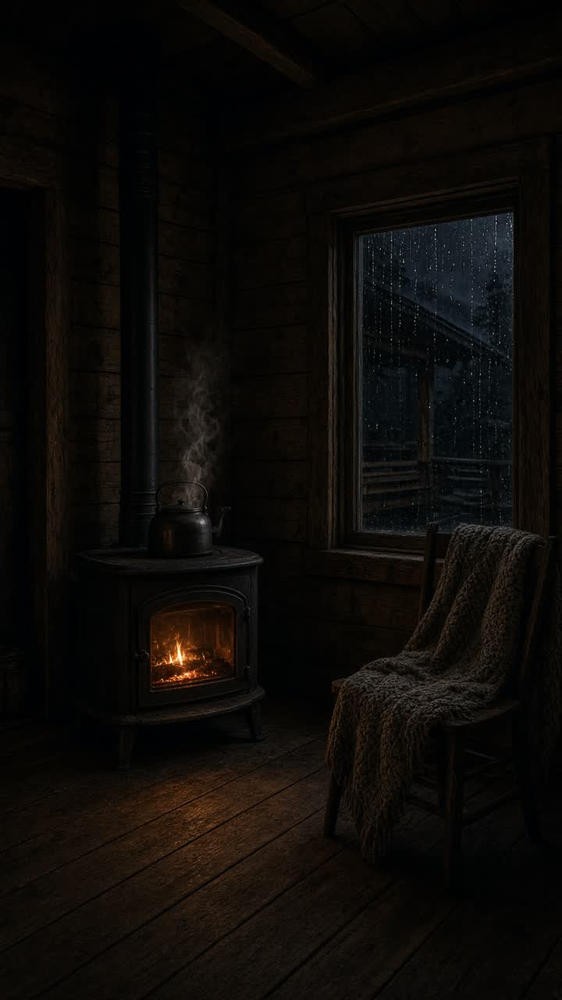
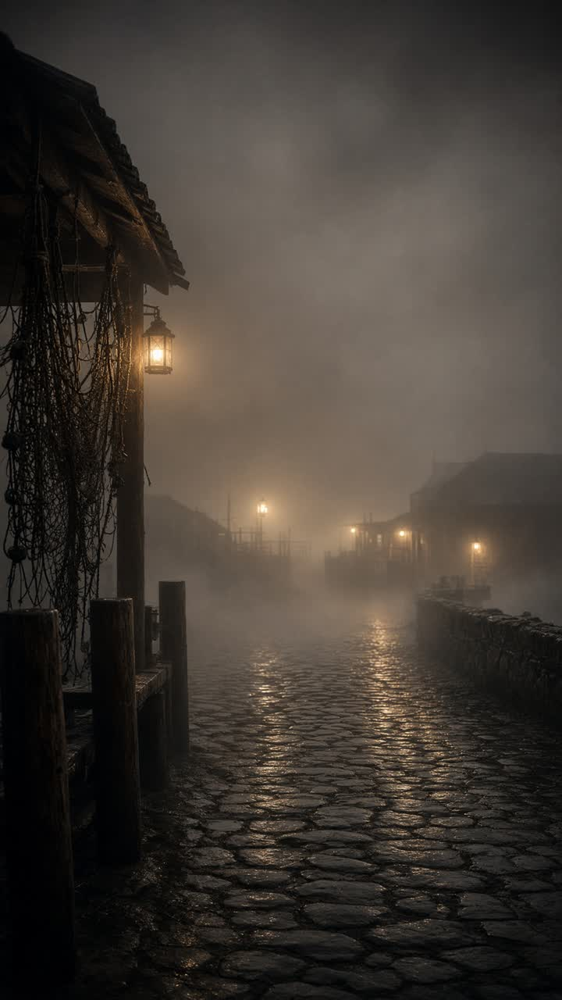
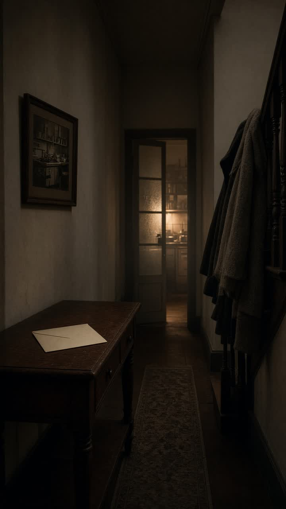

Somewhere it is always almost bedtime.

A cabin that keeps watch without reporting.

Villages that have always been in mist.

A house that knows the weather of a week, not a name.
Indoor weather only. Nothing here is a name, a date, or a plan.
Begin